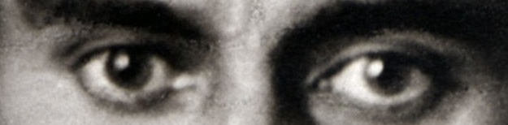

Die Verwandlung

Die Verwandlung ist eine Erzählung von Franz Kafka. Sie handelt von Gregor Samsa, der eines Morgens aufwacht und sich in ein riesiges Insekt verwandelt hat. Seine Familie hat Angst vor ihm und behandelt ihn immer schlechter. Das Buch zeigt Themen wie Einsamkeit, Familie und Ausgrenzung.